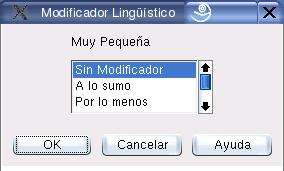

Edición de Modificadores Lingüísticos
El cuadro de diálogo que muestra la figura 7.5 permite adicionar modificadores lingüísticos a las etiquetas, cuando una de esta se selecciona como valor por defecto de una variable (ver sección 7). Las opciones disponibles son:
- Sin modificador.
- A lo sumo.
- Por lo menos.
- Nada.
- Cualquier cosa.
Figura 7.5:
Diálogo para edición de modificadores lingüísticos
|

|
Oscar Duarte
2005-10-17